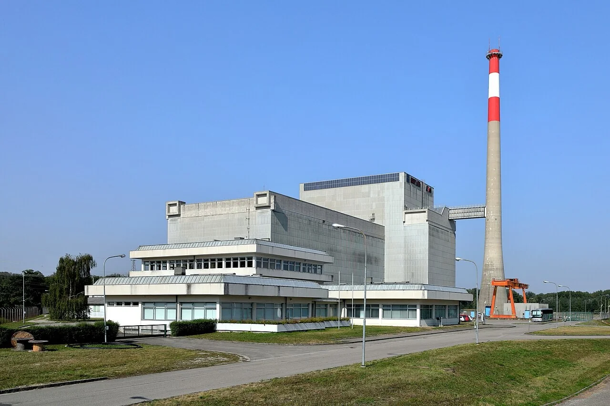
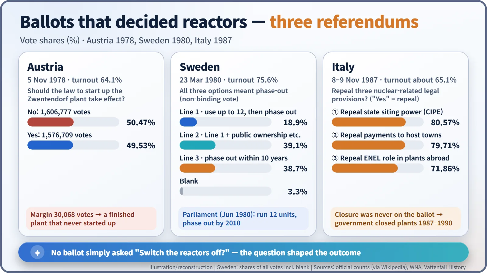
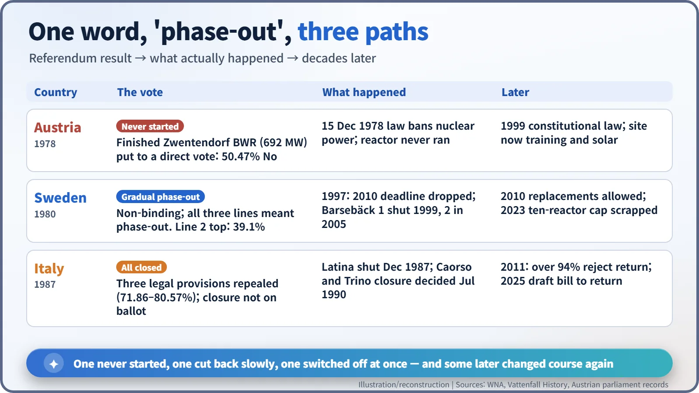
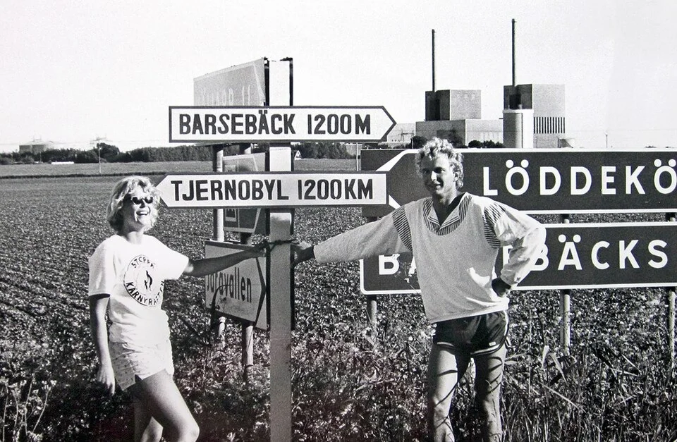

Nuclear History · 264
Thirty Thousand Votes and a Silent Reactor — How Referendums Shaped Nuclear Phase-outs in Austria, Sweden and Italy
Austria stopped a finished plant by 30,068 votes, Sweden chose among three kinds of phase-out, and Italy repealed three laws before closing every reactor.
Between 1978 and 1987, voters in Austria, Sweden and Italy were asked about nuclear power in national referendums. Austria stopped a finished plant by 30,068 votes, Sweden chose among three kinds of phase-out, and Italy repealed three legal provisions that its government then followed by closing every reactor. Decades later, some of those decisions were reversed.
A power station that never made power
Drive west from Vienna along the Danube and you reach the village of Zwentendorf. Beside the river stand grey concrete halls and a tall chimney with red and white bands. It looks every inch a nuclear power station. Yet this plant has never produced a single watt of nuclear electricity. It was finished and ready to start when voters stopped it, by a margin of just over thirty thousand votes.

When governments handed the question to voters
In the 1970s, after the oil shocks, many European governments wanted more nuclear power. At the same time, the anti-nuclear movement was growing, and the question became not only "Is it safe and affordable?" but "Who gets to decide?" Some countries asked their citizens directly. The answers all travelled under the same word, "phase-out", yet they led to remarkably different places.
Austria, 1978: a finished plant that never started
Zwentendorf was a boiling water reactor (BWR), a design in which water boils inside the reactor itself and the steam drives the turbine. Construction began on 4 April 1972, and the plant was rated at 692 megawatts (net). [2]
Chancellor Bruno Kreisky (1911–1990) put the decision to the people. On 5 November 1978, Austria held the first nationwide referendum of its Second Republic. Voters were asked whether the law passed by parliament in July 1978 on the peaceful use of nuclear energy, in effect the start-up of Zwentendorf, should come into force. Kreisky is reported to have said he would resign if the vote went against the plant.
The result: 1,606,777 No (50.47%) against 1,576,709 Yes (49.53%), a margin of 30,068 votes, on a turnout of 64.1%. On 15 December 1978 parliament passed a law banning nuclear fission for power generation, and in 1999 Austria raised the ban to constitutional status with a federal constitutional law for a nuclear-free Austria. Kreisky did not resign after all; his party won a big victory in the 1979 election. [1] [2]
Sweden, 1980: three ways of saying "eventually, no"
In Sweden, nuclear power shook governments. In 1976 Thorbjörn Fälldin (1926–2016) of the Centre Party, which had promised to phase out nuclear power, became prime minister, but his coalition fell apart in October 1978 amid disputes between the governing parties. Then, in March 1979, came the accident at Three Mile Island in the United States, and parliament decided to hold a referendum. [3]
The vote on 23 March 1980 had an unusual feature: all three options were forms of phase-out.
- Line 1: use at most 12 reactors, including those under construction, with no further expansion.
- Line 2: the same path, plus conditions such as energy conservation and public ownership of new large power plants.
- Line 3: close the six operating reactors within ten years.

Line 2 came first with 39.1%, Line 3 took 38.7% and Line 1 18.9% (shares of all votes, including 3.3% blank), on a turnout of 75.6%. The referendum was not legally binding, but in June 1980 parliament decided that 12 reactors would run and that nuclear power would be phased out by 2010. [4] [3]
Italy, 1987: a nuclear vote that never asked about closing reactors
Italy voted on 8–9 November 1987, the year after the Chernobyl accident. And here is a common misunderstanding: Italians were not asked "Shall we close the nuclear plants?" An Italian referendum of this kind can only repeal existing provisions of law. Three of the five questions concerned nuclear power: a rule that let a government committee (CIPE) choose plant sites when local authorities failed to decide in time; compensation payments to towns hosting power plants; and permission for the state utility ENEL to take part in building and running nuclear plants abroad. With a turnout of about 65%, the repeals were approved by 80.57%, 79.71% and 71.86%. [7]
The closures came afterwards, by government decision. Latina was shut down in December 1987, and in July 1990 the government decided to close Caorso and Trino. The almost-finished Montalto di Castro plant was converted into a fossil-fuelled power station. [6]

The story did not end at the ballot box
Sweden's 2010 deadline did not hold. In 1997 parliament dropped the deadline but decided to close the Barsebäck plant first: unit 1 shut down on 30 November 1999 and unit 2 in May 2005. Barsebäck had long been a focus of protest; two weeks after the Chernobyl accident became known in 1986, activists put up signs beside it reading "TJERNOBYL 1200 KM". In 2010 parliament opened the way to replacing old reactors with new ones at existing sites, and in 2023 it scrapped the cap of ten reactors. [3] [5]

Italy announced a return to nuclear power in 2008, but in June 2011, three months after the Fukushima accident, more than 94% of voters rejected it in another referendum. In 2025 the government approved a draft bill to bring nuclear power back once again. Austria still keeps its ban; Zwentendorf has served as a source of spare parts for identical German plants, a training centre and a solar research site. [6] [2]
So the same word covered three different stories: one country never started, one cut back slowly and then changed course, and one switched off at once and is now reconsidering. What the ballot actually asked, and how governments turned the result into law and policy, made all the difference.